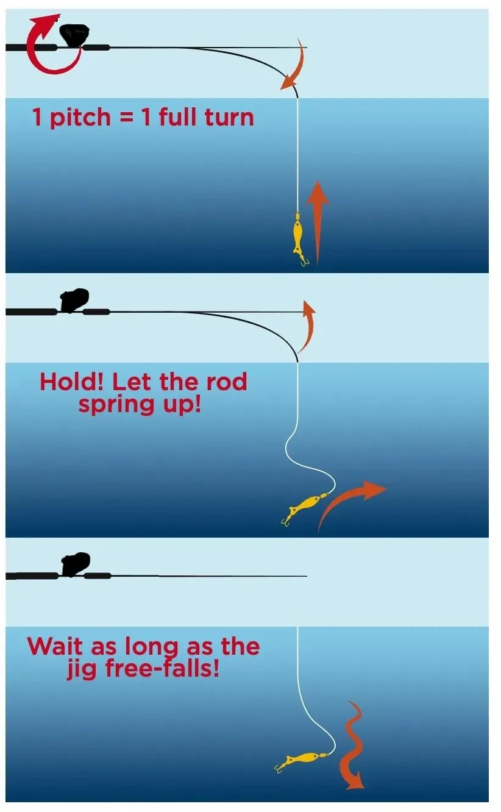

Jigging

Το jigging είναι τεχνική ψαρέματος με μεταλλικά ή βαριά τεχνητά δολώματα (jigs), τα οποία δουλεύονται με κοφτές, ρυθμικές κινήσεις του καλαμιού ώστε να κινούνται κάθετα μέσα στη στήλη του νερού και να μιμούνται τραυματισμένο ή πανικόβλητο μικρόψαρο. Σε αντίθεση με άλλα τεχνητά που κινούνται κυρίως οριζόντια, το jig ανεβοκατεβαίνει απότομα, προκαλώντας τα αρπακτικά να επιτεθούν.
Εξοπλισμός
Χρησιμοποιούνται κοντά, δυνατά καλάμια και μηχανισμοί με καλή σχέση μετάδοσης, ώστε να αντέχουν το βάρος του jig και τα συνεχή ανεβοκατεβάσματα, καθώς και νήμα μικρής διαμέτρου για καλύτερη αίσθηση. Τα jigs είναι μεταλλικά δολώματα διαφόρων βαρών και σχημάτων, επιλεγμένα ανάλογα με το βάθος και το ρεύμα, συχνά με assist hooks στην κεφαλή για καλύτερο κάρφωμα στα μεγάλα ψάρια.
Πώς δουλεύει η τεχνική
Στο κλασικό κάθετο jigging το δόλωμα αφήνεται να φτάσει στον βυθό και στη συνέχεια ο ψαράς το ανεβάζει και το ξανααφήνει να πέσει με συνδυασμό γρήγορων μαζεμάτων και κοφτών κινήσεων του καλαμιού, δημιουργώντας μια ακανόνιστη κίνηση πάνω–κάτω. Στο slow pitch ή slow jigging οι κινήσεις είναι πιο αργές και τονίζεται περισσότερο η πτώση του jig, που «φτερουγίζει» και πέφτει σαν πληγωμένο ψάρι, κάτι που συχνά προκαλεί τα ψάρια να χτυπήσουν τη στιγμή που αφήνουμε το δόλωμα να κατέβει.
Πού χρησιμοποιείται
Το jigging εφαρμόζεται κυρίως από βάρκα σε βαθιά νερά, πάνω από κοφτά βυθιά, ξέρες και σημεία με κοπάδια μικρόψαρων, για είδη όπως μαγιάτικα, ροφούς, ντάσκες και άλλα μεγάλα αρπακτικά.[web:533][web:539] Υπάρχει και το shore jigging, όπου βαριά jigs εκτοξεύονται από την ακτή σε βαθιά σημεία και δουλεύονται με παρόμοιες κινήσεις, δίνοντας τη δυνατότητα στον ψαρά να στοχεύσει μεγάλα ψάρια χωρίς σκάφος.